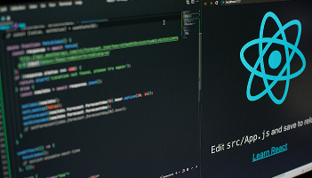

-
 React 入門不再迷惘：三步驟帶你上手核心概念
你是否對 React 感到好奇，卻苦惱於該如何正式啟動學習之路？身為前端工程師兼職涯諮詢師，我常遇到同學問我：「React 到底該怎麼入門？」為了幫大家減少摸索的時間，我整理出三個循序漸進的關鍵步驟，帶你更輕鬆地掌握 React 核心概念，真正把理論應用在實際專案中。
-

前端作品集打造指南：讓你的專案成為履歷亮點
對正在求職的前端工程師而言，作品集往往是第一個「說話」的利器。當面試官瀏覽你的網頁作品時，能夠快速了解你的程式邏輯、設計感以及解決問題的思路。我在協助多位同學優化履歷與作品集的過程中，總結出一些關鍵要素，分享給正在打造、升級作品集的你。
-

CSS 魔法大揭密：排版與設計的三大關鍵技巧
在瀏覽器畫面上實現各種精美介面，一直是前端開發充滿成就感的部分。但當面臨複雜的佈局需求或是響應式設計時，往往讓人抓破頭皮。這篇文章想跟大家分享我在實務專案中累積的三大技巧，幫助你更有效率地駕馭 CSS，打造兼具美感與功能性的網頁。
-
前端轉職必讀：從自學者到工程師的心路歷程
能夠憑藉自學進入前端領域，聽起來令人振奮，但實際過程中可能遇到的挫折與疑慮，卻常常令人猶豫。回想當初我也是對程式一竅不通，卻在興趣的驅使下毅然踏上自學之路。今天想透過這篇文章，分享我的轉職經驗和一些調適心態的秘訣，盼能為有心投入前端領域的你提供一些力量與方向。
-

前端面試不再慌：破解常見提問的三大策略
面試前端工程師時，你或許擔心被問到各種刁鑽的技術題目，或是擔憂無法在短時間內展現實力。其實，許多面試官關注的重點並不僅是程式碼本身，更包含問題解決的流程與溝通能力。這篇文章將分享我在面試過程中常見的三大難題，以及如何以更具條理的方式回應，讓你在面試場合中脫穎而出。
-

Vue 3 新手指南：快速掌握 Composition API 與關鍵特色
許多前端開發者對 Vue 一直情有獨鍾，因為它易上手又靈活。隨著 Vue 3 上線，Composition API 的導入更是大幅提升可讀性與維護性。這篇文章將帶你快速瞭解 Vue 3 的獨特魅力，並透過簡單範例幫助你更順利地切換到新版本的思維模式。
-

Git 與版本控制：前端協作的必修課
當你從一人開發晉升到多人合作，版本控制的好壞往往決定了專案的順暢度。Git 不僅能記錄程式碼變動，更能確保每位成員都在正確的分支上完成任務。透過這篇文章，你將了解常見的 Git 流程，並學會在前端專案中輕鬆管理與協作。
-

SEO 與前端最佳實踐：讓搜尋引擎看見你的網站
即使你的網站擁有優美的介面與強大的功能，如果在搜尋引擎上找不到它，那就形同隱形。身為前端工程師，瞭解基本的 SEO 概念與技術是讓網站脫穎而出的關鍵。這篇文章將分享我在前端實作時，常用的 SEO 小技巧與實務做法，幫助你顯著提升網站曝光度。
-

-
TypeScript 快速上手：強化前端程式碼的安全與可讀性
許多前端開發者在成長過程中都曾面臨動態語言帶來的錯誤風險，而 TypeScript 的出現正是為了改善這種情況。它能在開發階段即發現型別錯誤，並帶來更友善的程式碼提示。本篇文章將介紹如何在前端專案中導入 TypeScript，並透過真實案例展示它為開發流程帶來的優勢。
-

掌握前端測試：從單元測試到端對端測試的完整攻略
寫程式容易，但要確保程式在多種情境、裝置都能正常運行就沒那麼簡單了。這時「測試」便成了維持程式品質的關鍵環節。從最基礎的單元測試，到模擬使用者行為的端對端測試，每一種測試方式都有它的價值與最佳應用情境。本文將帶你認識不同類型的前端測試工具，以及如何在開發流程中實踐自動化測試，打造更穩定、可預期的專案。